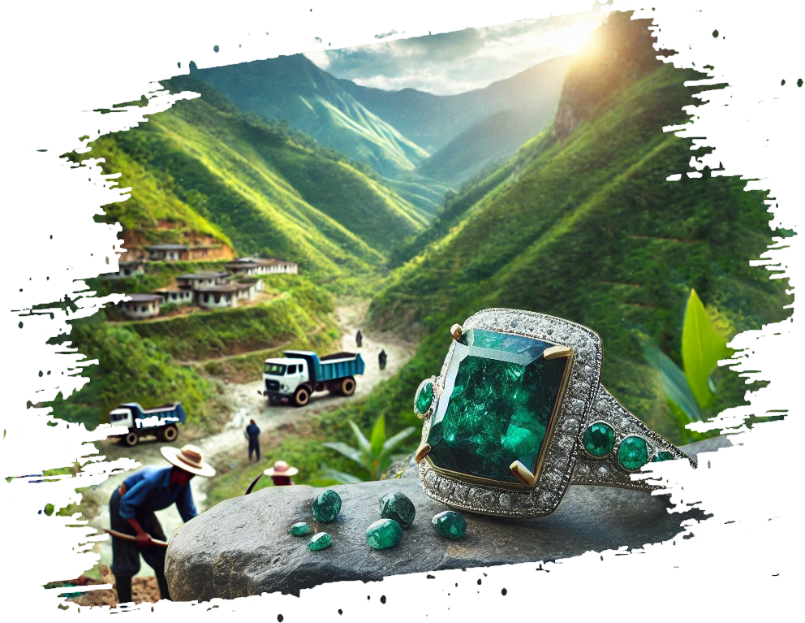
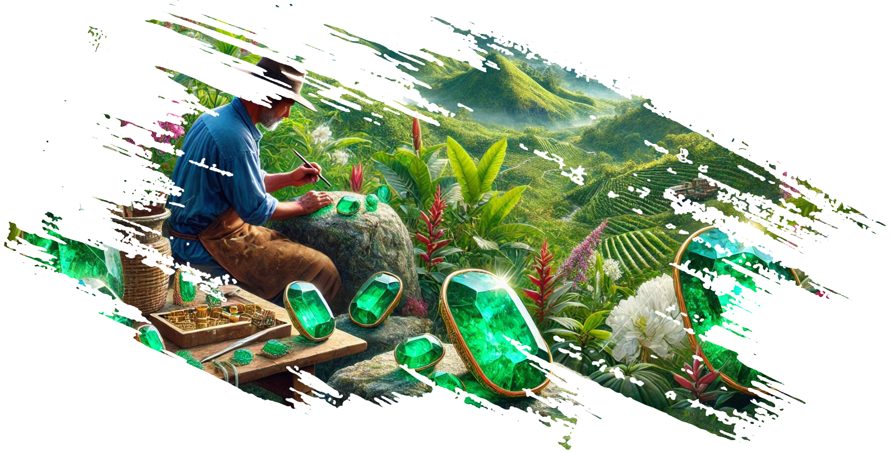
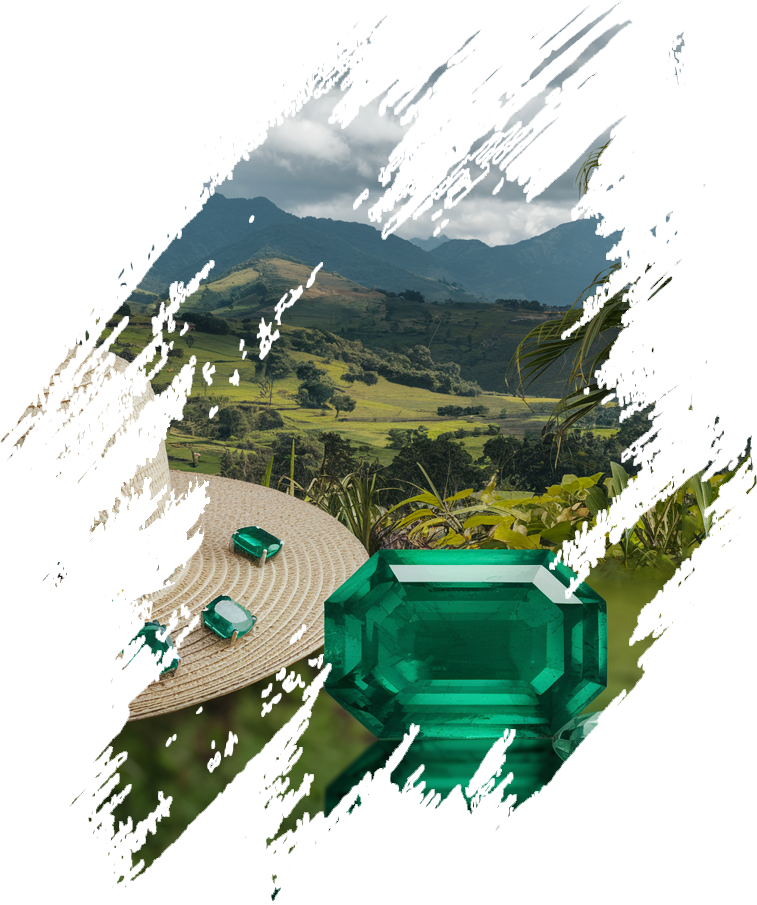
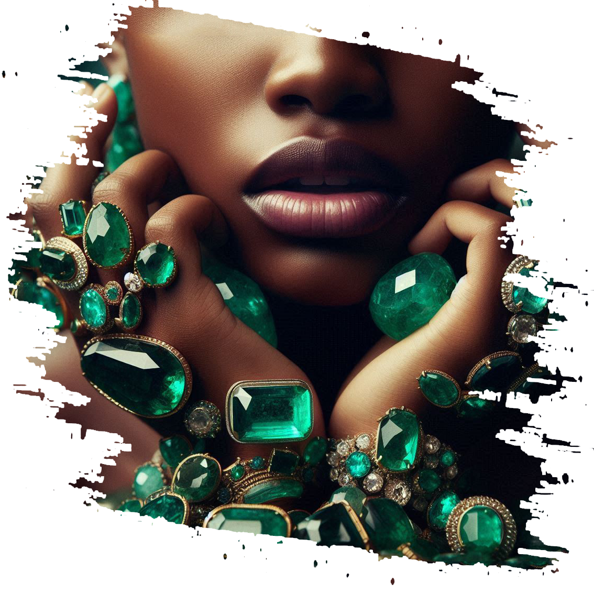

Verde Mont nació de una pasión por la belleza natural y la riqueza cultural de Colombia, un país que resplandece como una joya en el corazón de América del Sur. Nuestra aventura comenzó en las majestuosas montañas de Muzo, la capital mundial de la esmeralda, donde por siglos se han descubierto las esmeraldas más exquisitas y codiciadas. Inspirados por estas gemas y el esplendor de nuestra tierra natal, decidimos crear una marca que no solo encarne la elegancia, sino que también cuente la historia de la dedicación y el arte de quienes trabajan en perfecta armonía con la naturaleza. Verde Mont es un homenaje a Colombia, al verde de sus montañas, y al brillo incomparable de sus esmeraldas.


En Verde Mont, nuestra misión es llevar la esencia de Colombia al mundo, a través de joyas únicas que combinan la pureza de las esmeraldas de Muzo con la finura de la Plata de Ley 950 y el oro de 18 quilates. Nos esforzamos por crear piezas que no solo adornen, sino que también conecten a quienes las portan con la historia y el espíritu de nuestra tierra. Buscamos establecer un estándar de excelencia en la joyería, fusionando la tradición con la innovación, y siempre respetando el entorno y las comunidades que hacen posible nuestra visión.
Excelencia: Cada joya de Verde Mont es un reflejo de nuestro compromiso con la calidad superior. Desde la selección de las esmeraldas hasta la fabricación de cada pieza, cuidamos cada detalle para ofrecer solo lo mejor. Autenticidad: Trabajamos directamente con mineros y artesanos locales para asegurar que nuestras esmeraldas sean genuinas, y que cada joya lleve consigo una parte de la rica herencia colombiana. Innovación: Aunque nuestras raíces están profundamente arraigadas en la tradición, nos mantenemos a la vanguardia en diseño, creando piezas contemporáneas que capturan el espíritu del tiempo, sin perder la esencia de lo clásico. Elegancia: Creemos que la verdadera belleza radica en la simplicidad y la perfección. Nuestras joyas están diseñadas para realzar la elegancia natural de quien las lleva.


Ser reconocidos como una marca líder en el mundo de la joyería de lujo, llevando el nombre de Colombia a la cima del arte y la excelencia, y haciendo de Verde Mont un sinónimo de calidad, autenticidad y belleza eterna.
Verde Mont no es solo una marca de joyería; es la máxima expresión de calidad y elegancia. Cada pieza es meticulosamente elaborada con esmeraldas excepcionales, reflejando el esplendor de Colombia y garantizando una joya de valor eterno y belleza inigualable.